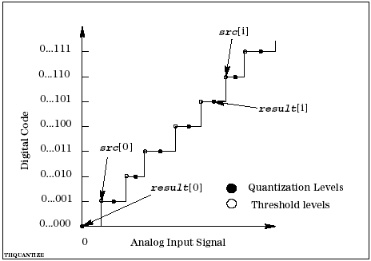

DSP_TH_QUANTIZE
This API converts threshold levels to quantization levels for an A/D converter.
Each quantization level, which is used to compute the ILE and DLE values, is defined as the midpoint between adjacent threshold levels.

The number of result elements must be ≥ size + 1.
This API is defined in the header file /opt/hp93000/soc/prod_com/include/MAPI/libdsp.h.
Syntax
DSP_TH_QUANTIZE(ARRAY_D& src, ARRAY_D& result);
DSP_TH_QUANTIZE(DOUBLE *src, DOUBLE *result,
INT size);I/O |
Parameter |
Description / Range |
|---|---|---|
I |
src |
Source array in which threshold levels are stored |
O |
result |
Result array in which quantization levels are stored |
I |
size |
Number of elements to be processed 2 ≤ size ≤ 2097152 size ≤ (size of src) size + 1 ≤ (size of result) |
Example
double threshold[1024], quantization[1024]; LINEARtype result; double dle[1024],ile[1024]; . . DSP_TH_QUANTIZE(threshold, quantization, 1024); DSP_LINEAR(quantization, &result, dle, ile, 1024, END_PT);
DSP_TH_QUANTIZE converts threshold from threshold levels to quantization levels, then DSP_LINEAR computes the DLE and terminal-based ILE.